Idaho
 Go Home!
Go Home!
Back to the photo page...
NOTICE:
To those expecting picture of Hope, which would, under normal
circumstances, considering I went to Idaho pretty much solely to visit
her, be reasonable to expect, you will be sorely disappointed. She has
'caused me to promise not to post pictures of her unless she approves
of them, and, at the moment, she is not able to go over the pictures.
*blinks* soory.
NOTICE:
Partially rescinding the previous notice, Hope was able to go over the
pictures, and ventured to find two pictures of herself acceptable for
display to the general public. The rest must remain hidden until she
come more to her senses. Until then, enjoy.
NOTICE:
I know I'm bad at taking picture.
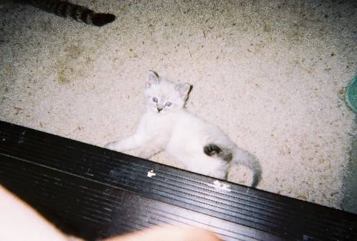
Hope's kitty. one of 'em, t'least
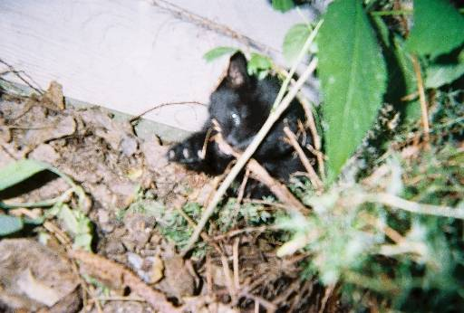
Hope's kitty. the other one.
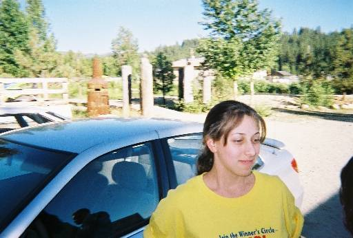
miss Leyna.
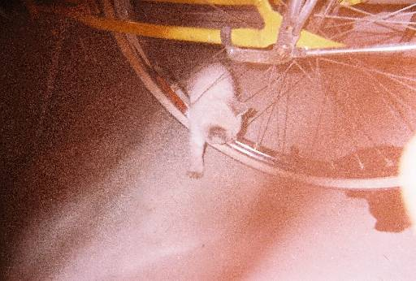
a kitty trying to crawl through the spokes of
a bicycle. how cute ^_^
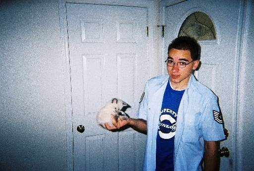
Shiloh [Hope's younger brother] holding said
kitty
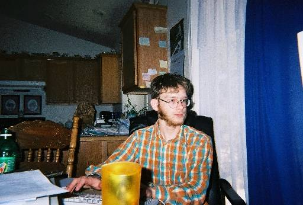
Micah [Hope's
older-than-Shiloh-but-younger-than-herself brother] at the computer
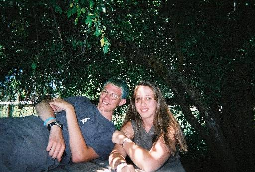
Myself and Leyna, on Leyna's lunch break
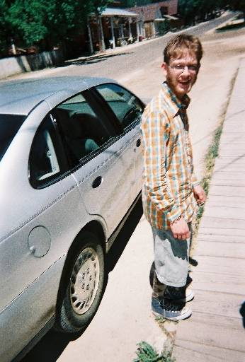
the monkey
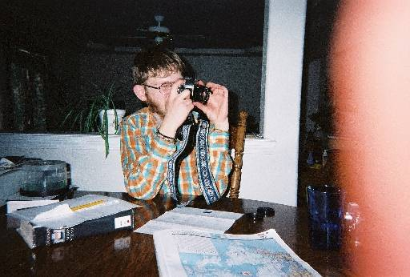
Micah, pretending he was gonna take a picture
of Hope
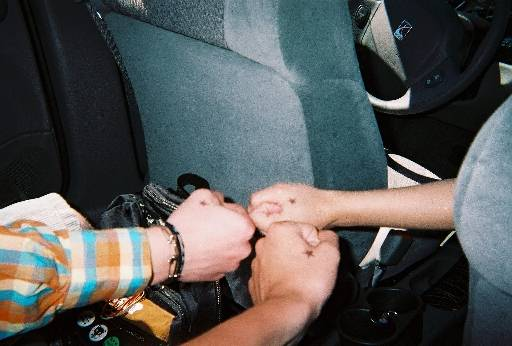
Micah, Hope, and my hands, emo style
*cough*
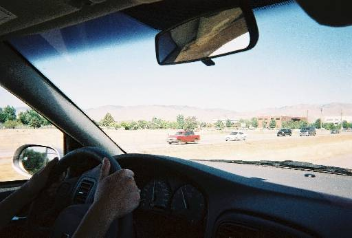
teh mountains. us Kansas folk (or, maybe just
me) are mesmerised quite easily... heh
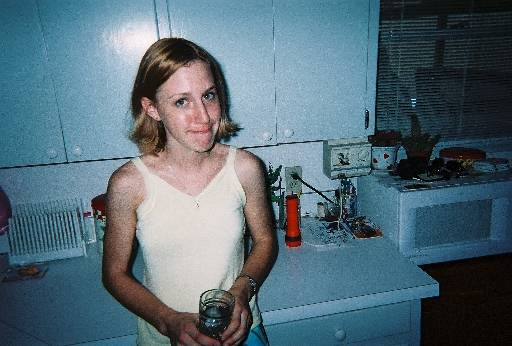
miss Shaye. in her house.
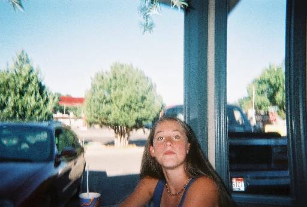
Some person Shaye, Micah and Hope knew. I
think her name was Brittany. i'm probably wrong.
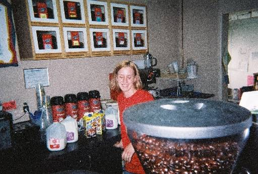
Shaye. working. while we pestered her.
*nods*
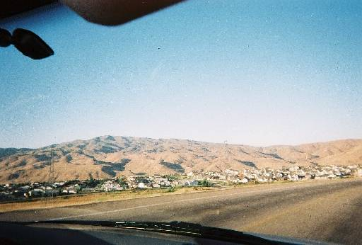
them mesmerising mountains again
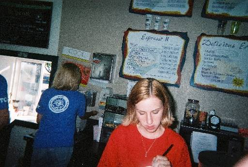
Shaye working. again. silly girl. work is for
kids.
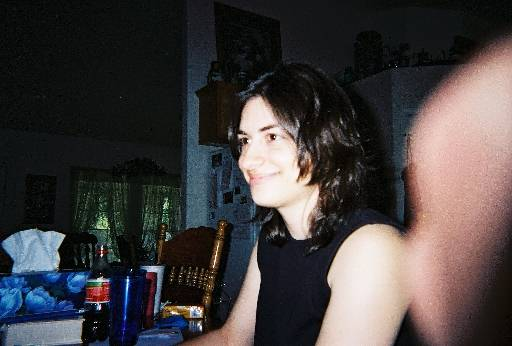
miss Hope thinking my taking of a picture of
her to be quite humourous
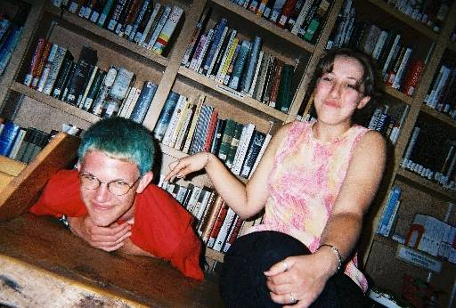
Leyna and myself, at the library, on her
break, again
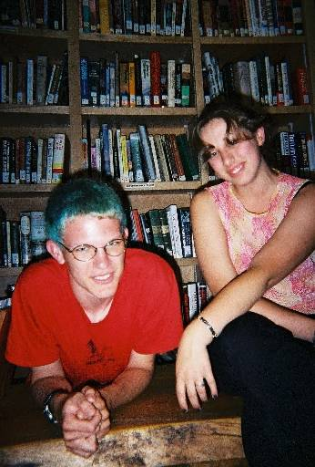
Leyna and myself, at the library, on her
break, again, again
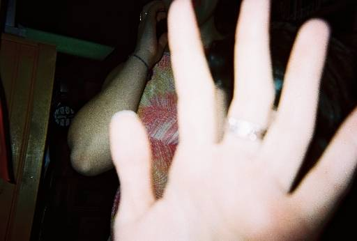
Leyna not wanting a picture taken of
herself.
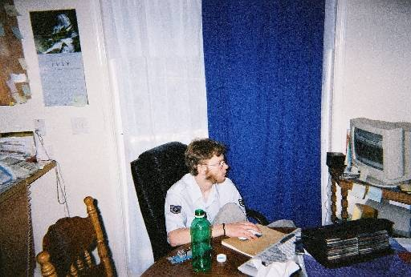
Micah on the computer, again
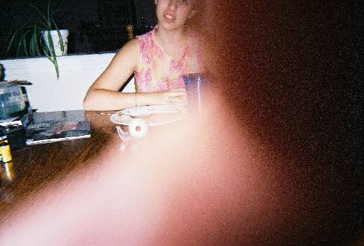
Leyna, and a much too large portion of my
hand.
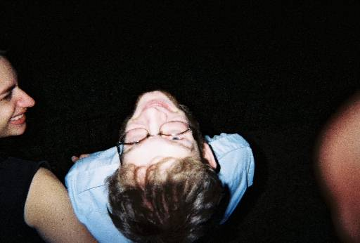
teh monkey bein' goofy in teh cemetary
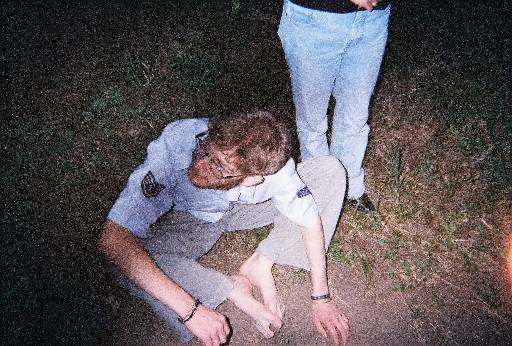
Micah being a monkey in teh cemetary
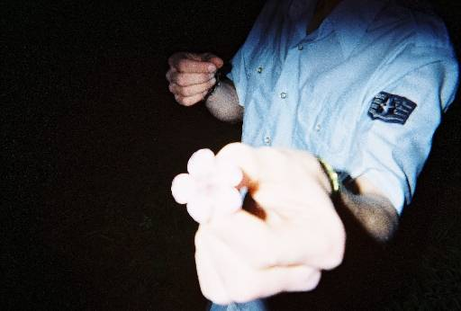
Micah with a flower
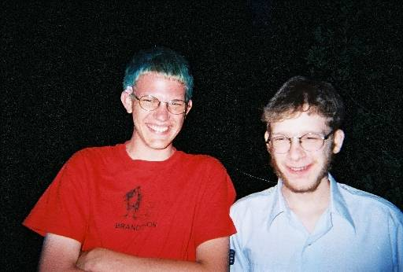
Micah with myself with a flower in me hair
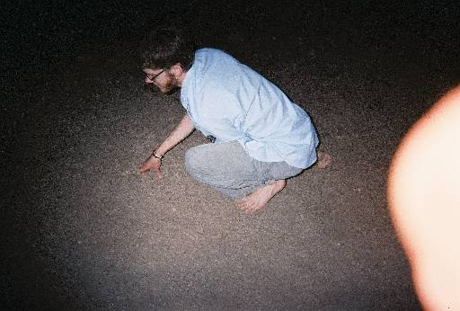
Micah walking like a monkey
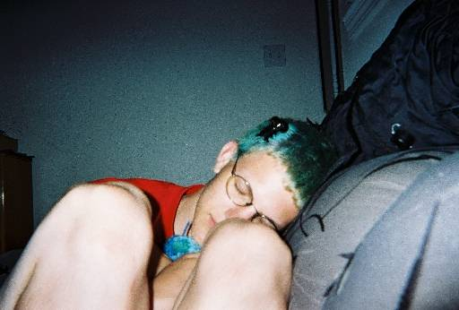
Myself, not asleep (i don't think) with a
black clippy thing in me hair.
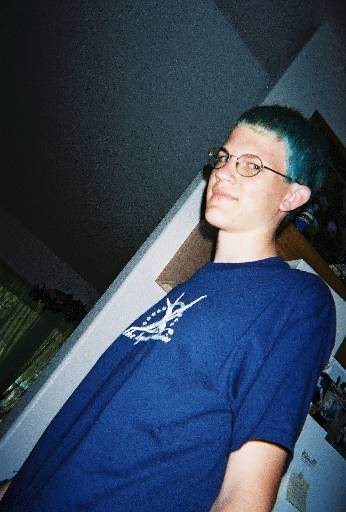
Me
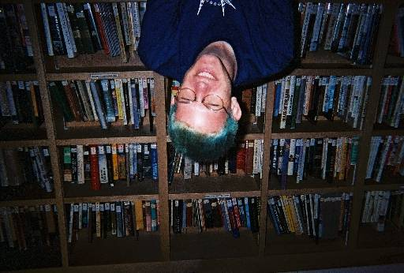
Yes, this picture is upside down. That because
Leyna and Hope thought that, if you took a picture upside down, then
turned it right side up, it would be... mirrored? Somthing like that.
heh. silly kids.
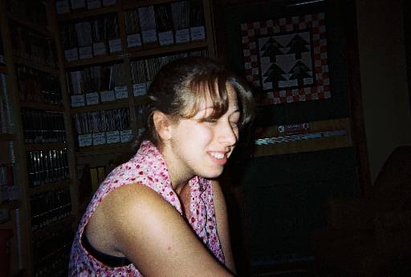
Leyna at the library
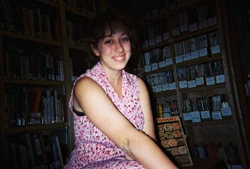
More Leyna at the library
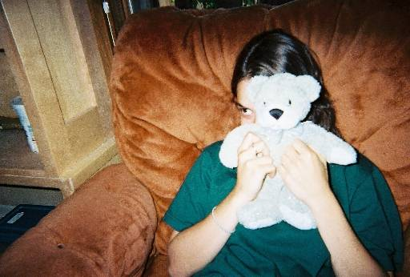
miss Hope with her pancake *nods*
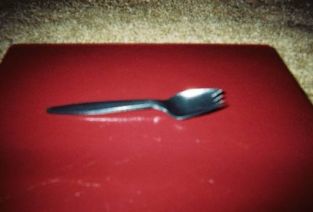
The spork which was one of my souvenirs from
visiting teh Hope in teh Idaho *nods*
Back to the photo page...
Go Home!